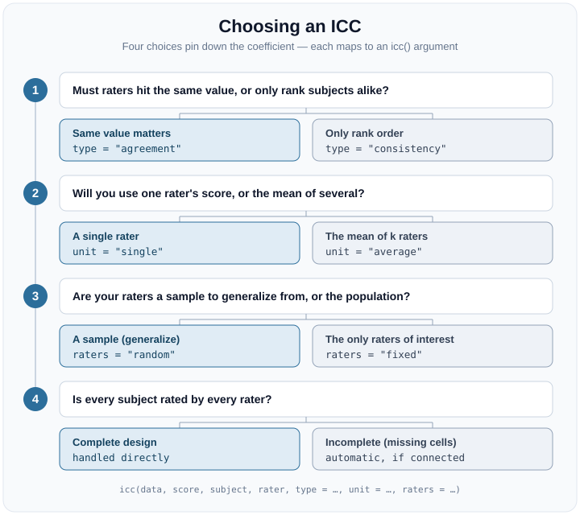

“Which ICC should I report?” is the question this package is built to answer. There is no single intraclass correlation: the name hides a whole family of coefficients, and they do not all measure the same thing. (In the jargon, they target different estimands — different true quantities you could be trying to pin down; the Glossary defines this and the other terms as they arise.) Report the wrong one and you can overstate reliability by a wide margin, or penalize a rating procedure for differences that do not actually matter to you.
The good news: you do not need the formulas. You need to answer a few
plain questions about your study — does the exact value matter
or only the ranking? will you use one rater or an average of several? —
and each answer sets one argument of icc(). Four such
choices pin down the coefficient, and each is a genuine decision about
your measurement, not a technicality. Work through them top to bottom on
the single dataset below (so the numbers stay comparable); by the end
you will know both which coefficient to report and the exact call that
computes it.

The data
ratings is the six-subject, four-rater example of Shrout
and Fleiss (1979), in the long, one-row-per-rating format
icc() expects. Every subject is rated by every rater, so it
is a complete, balanced two-way design – the clean case in which the
choices below are easiest to see.
str(ratings)
#> 'data.frame': 24 obs. of 3 variables:
#> $ subject: Factor w/ 6 levels "1","2","3","4",..: 1 2 3 4 5 6 1 2 3 4 ...
#> $ rater : Factor w/ 4 levels "1","2","3","4": 1 1 1 1 1 1 2 2 2 2 ...
#> $ score : num 9 6 8 7 10 6 2 1 4 1 ...A prior question: are the raters crossed? (model)
Is every subject rated by the same set of raters, or
by a different set each time? If the same raters judge everyone
(a crossed, two-way design, like ratings), keep
the default model = "twoway" and the four choices below
apply. If instead each subject is rated by whichever raters happened to
be available – so “rater 1” for one subject has nothing to do with
“rater 1” for another – the raters are interchangeable and the
design is one-way (model = "oneway").
oneway <- icc(ratings, score, subject, rater, model = "oneway", seed = 2024)
#> Warning in check_dep_version(dep_pkg = "TMB"): package version mismatch:
#> glmmTMB was built with TMB package version 1.9.21
#> Current TMB package version is 1.9.22
#> Please re-install glmmTMB from source or restore original 'TMB' package (see '?reinstalling' for more information)
oneway
#> ── Intraclass correlation: one-way random ──────────────────────────────────────
#> Subjects: 6 | Ratings: 24 (4 per subject, balanced) | raters interchangeable
#> Engine: glmmTMB (REML) | CI: 95% montecarlo (10000 draws)
#>
#> index estimate 95% CI
#> ICC(1) 0.166 [0.008, 0.838]
#> ICC(k) 0.443 [0.032, 0.954]
#>
#> Variance components: subject 1.244, residual 6.264 (rater confounded)
#> Shrout & Fleiss equivalent: ICC(1) = ICC(1,1), ICC(k) = ICC(1,k)A one-way model cannot separate systematic rater differences from
error, so it folds them into the residual and reports a single
ICC(1) / ICC(k). That makes it the
most conservative coefficient: on this data
ICC(1) is 0.17, below the two-way ICC(A,1) and
ICC(C,1) you will see next, precisely because those
separate the rater effect that one-way absorbs. The
agreement/consistency and fixed/random choices below do not apply to
one-way (there is no rater term to reason about) – so answer this
question first.
1. Agreement vs. consistency (type)
Does the actual value need to match, or only the rank order? Absolute agreement treats a systematic difference between raters – one judge scoring consistently higher than another – as error. Consistency forgives a constant per-rater offset and asks only whether raters rank subjects the same way.
agreement <- icc(ratings, score, subject, rater, type = "agreement", seed = 2024)
agreement
#> ── Intraclass correlation: two-way random, absolute agreement ──────────────────
#> Subjects: 6 | Raters: 4 (random) | Observations: 24 of 24 cells (complete)
#> Engine: glmmTMB (REML) | CI: 95% montecarlo (10000 draws)
#>
#> index estimate 95% CI
#> ICC(A,1) 0.290 [0.050, 0.711]
#> ICC(A,k) 0.620 [0.173, 0.908]
#>
#> Variance components: subject 2.556, rater 5.244, residual 1.019
#> Shrout & Fleiss equivalent: ICC(A,1) = ICC(2,1), ICC(A,k) = ICC(2,k)
consistency <- icc(ratings, score, subject, rater, type = "consistency", seed = 2024)
consistency
#> ── Intraclass correlation: two-way random, consistency ─────────────────────────
#> Subjects: 6 | Raters: 4 (random) | Observations: 24 of 24 cells (complete)
#> Engine: glmmTMB (REML) | CI: 95% montecarlo (10000 draws)
#>
#> index estimate 95% CI
#> ICC(C,1) 0.715 [0.340, 0.926]
#> ICC(C,k) 0.909 [0.673, 0.980]
#>
#> Variance components: subject 2.556, rater 5.244, residual 1.019Here ICC(A,1) is 0.29 but ICC(C,1) is 0.71.
The gap is not noise – it is a direct read-out of how much the raters
differ in average level. Consistency is never smaller than agreement,
because it drops a source of error. Choose agreement
when the number itself must be trusted (a clinical score, a physical
measurement) and consistency when only relative
standing matters (ranking applicants).
2. Single vs. average (unit)
Will you use one rater’s score, or the mean of
several? icc() returns both rows by default:
ICC(*,1) is the reliability of a single rater, and
ICC(*,k) is the reliability of the mean of your
k raters. Averaging cancels independent error, so
ICC(*,k) is always the larger number (the Spearman–Brown
relationship).
For absolute agreement above, the single-rater 0.29 rises to 0.62 for
the four-rater mean. Report ICC(*,k) only if the averaged
score is what you will actually act on; if downstream users see one
rater’s judgment, ICC(*,1) is the honest figure. Request
one or both with unit = "single",
unit = "average", or the default
c("single", "average").
3. Random vs. fixed raters (raters)
Are your raters a sample you want to generalize beyond, or the entire population of interest? Random raters (the default) are a sample; the coefficient generalizes to the rater universe they were drawn from. Fixed raters are the only judges you care about, and the coefficient does not generalize past them.
fixed <- icc(ratings, score, subject, rater, raters = "fixed", seed = 2024)
#> Warning: Modeling raters as fixed restricts inference to exactly these raters; you
#> cannot generalize to other raters.
#> ℹ For interrater reliability, the two-way random model (`raters = "random"`) is
#> the recommended default (ten Hove et al. 2024; McGraw & Wong 1996, Case 2).
#> ℹ Use "fixed" only when these are the entire population of raters you will ever
#> use.icc() warns on raters = "fixed" because
random is the recommended default for interrater reliability: fixing the
raters answers a narrower question. On this balanced
design the fixed and random point estimates coincide, but they
are fit by different models and their intervals differ – and on
incomplete data even the point estimates diverge (see
below). Prefer random unless you truly never intend to
generalize beyond these exact raters.
4. Complete vs. incomplete designs
Is every subject rated by every rater? When cells
are missing, the classical ANOVA identities break down, but the mixed
model icc() fits does not – it uses whatever ratings are
present. Two things change automatically:
- The design must stay connected (the raters and
subjects must form a single linked web); a disconnected design cannot
separate subject from rater variance, and
icc()fails loudly rather than returning a plausible-looking number. - The averaging divisor for
ICC(*,k)becomes the effective number of ratings,k_eff— the harmonic mean of the per-subject counts (an average that leans toward the smaller counts, so a few well-rated subjects cannot disguise the many that were rated by fewer raters). It honestly reflects the ragged averages you actually computed.
A worked incomplete design
ratings_incomplete is ratings with one
change: rater 2 acted as a pilot and scored only the first two subjects,
leaving four empty cells.
inc <- icc(ratings_incomplete, score, subject, rater, seed = 2024)
inc
#> ── Intraclass correlation: two-way random, absolute agreement & consistency ────
#> Subjects: 6 | Raters: 4 (random) | Observations: 20 of 24 cells (incomplete)
#> Engine: glmmTMB (REML) | CI: 95% montecarlo (10000 draws)
#>
#> index estimate 95% CI
#> Absolute agreement
#> ICC(A,1) 0.249 [0.038, 0.693]
#> ICC(A,k) 0.521 [0.114, 0.881]
#> Consistency
#> ICC(C,1) 0.629 [0.228, 0.906]
#> ICC(C,k) 0.847 [0.491, 0.969]
#>
#> ICC(*,k) projects to an effective 3.27 raters (harmonic mean of ratings/subject).
#> Variance components: subject 2.281, rater 5.532, residual 1.344
#> Shrout & Fleiss equivalent: ICC(A,1) = ICC(2,1), ICC(A,k) = ICC(2,k)The header now reads 20 of 24 cells (incomplete), and
ICC(*,k) averages over an effective 3.27 raters
rather than 4 – the harmonic mean of the per-subject counts (four
subjects were seen by three raters, two by all four). The estimate sits
a little below the complete-data value, as fewer ratings warrant.
Fixed and random now diverge
On the balanced ratings, raters = "fixed"
and raters = "random" returned the same point estimate. On
incomplete data they no longer do: they are different models, and the
missing cells give them different information about the rater
effects.
random_inc <- tidy(icc(ratings_incomplete, score, subject, rater,
raters = "random", seed = 2024))
fixed_inc <- suppressWarnings(tidy(icc(ratings_incomplete, score, subject, rater,
raters = "fixed", seed = 2024)))
random_inc[, c("index", "estimate", "conf.low", "conf.high")]
#> # A tibble: 4 × 4
#> index estimate conf.low conf.high
#> <chr> <dbl> <dbl> <dbl>
#> 1 ICC(A,1) 0.249 0.0380 0.693
#> 2 ICC(A,k) 0.521 0.114 0.881
#> 3 ICC(C,1) 0.629 0.228 0.906
#> 4 ICC(C,k) 0.847 0.491 0.969
fixed_inc[, c("index", "estimate", "conf.low", "conf.high")]
#> # A tibble: 4 × 4
#> index estimate conf.low conf.high
#> <chr> <dbl> <dbl> <dbl>
#> 1 ICC(A,1) 0.236 0.0574 0.630
#> 2 ICC(A,k) 0.503 0.166 0.848
#> 3 ICC(C,1) 0.621 0.218 0.906
#> 4 ICC(C,k) 0.843 0.477 0.969The random interval is the wider of the two: generalizing to a rater universe carries the extra uncertainty of which raters you happened to sample, whereas fixing the raters removes it. This is why the choice matters more once data are incomplete.
When a design is not identified
Connectedness is not a formality. If the raters split into groups
that never share subjects, a subject difference cannot be told apart
from a rater difference, and icc() stops rather than
returning a plausible-looking number:
disconnected <- data.frame(
subject = factor(c(1, 1, 2, 2, 3, 3, 4, 4)),
rater = factor(c(1, 2, 1, 2, 3, 4, 3, 4)),
score = c(5, 6, 4, 5, 7, 8, 6, 7)
)
icc(disconnected, score, subject, rater)
#> Error in `icc()`:
#> ! The subject-by-rater design is disconnected, so the subject and rater
#> variances cannot be separated.
#> ℹ Every subject and rater must be linked through shared ratings (one connected
#> design).
#> ℹ For unlinked rater groups, a one-way ICC (`model = "oneway"`) or additional
#> linking ratings are needed.Subjects 1–2 are rated only by raters 1–2, and subjects 3–4 only by raters 3–4: two islands with no bridge between them. This is precisely the ill-posed case the package refuses to guess at.
A fifth choice: subject- vs. cluster-level
Everything above takes the subject as the object of measurement. When
subjects are themselves nested in higher-level units – pupils within
classrooms, patients within clinics – you may instead want the
reliability of the cluster mean, a multilevel ICC (ten Hove,
Jorgensen & van der Ark, 2022). Pass a cluster column
to icc() and it reports the subject-level
(within-cluster) and cluster-level (between-cluster)
coefficients side by side. The Multilevel designs article
works a full example.
Once you have a number
Picking the right coefficient is half the job; reading it is the other half. Two habits keep you honest, whichever coefficient you chose. Interpret it against its confidence interval, not the point estimate alone — a small study can leave the reliability genuinely uncertain across a wide range. And treat published “poor / good / excellent” cutoffs as rough conventions, not verdicts: the bar that matters depends on the stakes of your decision and on which coefficient you are reading. The Getting started article’s “Is this a good ICC?” section lays out the common rules of thumb and their caveats.
Naming crosswalk
Two older naming schemes are still common. icc() prints
both its own McGraw–Wong label and, where one exists, the Shrout–Fleiss
number:
Your choice (type × raters) |
McGraw & Wong (1996) | Shrout & Fleiss (1979) |
|---|---|---|
| agreement × random |
ICC(A,1), ICC(A,k)
|
ICC(2,1), ICC(2,k)
|
| consistency × fixed |
ICC(C,1), ICC(C,k)
|
ICC(3,1), ICC(3,k)
|
| consistency × random |
ICC(C,1), ICC(C,k)
|
(no classic name) |
| agreement × fixed |
ICC(A,1), ICC(A,k)
|
(no classic name) |
The two off-diagonal rows are worth noticing: the classic
Shrout–Fleiss triplet
ICC(1,·)/ICC(2,·)/ICC(3,·) never
named a two-way random consistency or a two-way fixed
absolute-agreement coefficient, even though both are perfectly
well-defined estimands that icc() computes.
Or let the package choose
If you would rather answer the questions than remember which argument
each maps to, choose_icc() walks the same tree and hands
back the coefficient to report together with the exact
icc() call that computes it. It does not
fit anything – there is no data argument – so it is a quick
way to settle the choice before you run the model.
choose_icc(type = "agreement", unit = "single", raters = "random")
#> ── Recommended ICC ─────────────────────────────────────────────────────────────
#> Design: two-way random, absolute agreement
#>
#> Recommendation: ICC(A,1)
#> Shrout & Fleiss equivalent: ICC(A,1) = ICC(2,1)
#>
#> Why:
#> - Crossed (two-way): the same raters judge every subject.
#> - Absolute agreement: the value itself must match; a systematic difference between raters counts as error.
#> - Single rater: you will act on one rater's score.
#> - Random raters: a sample you generalize beyond, to the rater universe they were drawn from.
#>
#> Run this on your data:
#> icc(data, score, subject, rater, type = "agreement", unit = "single")
#>
#> Notes:
#> - Complete vs. incomplete is automatic: icc() uses whatever ratings are present and projects ICC(*,k) to the effective number of ratings (k_eff). The design must stay connected, or icc() fails loudly.Pass the decisions as arguments, as above, or – in an interactive
session – call choose_icc() with them omitted to be asked
each outstanding question in turn. Answering a choice that does not
apply to your design (for example type under a one-way
model) is a clear error rather than a silent guess.
In one sentence
Pick agreement vs. consistency by whether the value
or only the rank must match; single vs. average by how
many raters you will actually use; random vs. fixed by
whether you generalize beyond these raters; and let icc()
handle complete vs. incomplete for you, provided the
design stays connected.
References
McGraw, K. O., & Wong, S. P. (1996). Forming inferences about some intraclass correlation coefficients. Psychological Methods, 1(1), 30–46.
Shrout, P. E., & Fleiss, J. L. (1979). Intraclass correlations: Uses in assessing rater reliability. Psychological Bulletin, 86(2), 420–428.
ten Hove, D., Jorgensen, T. D., & van der Ark, L. A. (2022). Interrater reliability for multilevel data: A generalizability theory approach. Psychological Methods, 27(4), 650–666.